Chapter 3 Projects
In the previous chapter, we learned to share our materials through the Open Science Framework (OSF). However, if we simply collect all our files together without a clear structure and organisation, our repository will be messy and useless. In fact, it will be difficult for anyone to make sense of the different files and use them.
In this chapter, we describe recommended practices to organize all the materials and files into a structured project and which are the advantages of creating a well documented, and licensed repository.
3.1 Project Structure
To facilitate the reproducibility of our study results, it is important to organize our analysis into a project. A project is simply a directory where to collect all the analysis files and materials. So, instead of having all our files spread around the computer, it is a good practice to create a separate directory for each new analysis.
However, collecting all the files in the same directory without any order will only create a mess. We need to organize the files according to some logic, we need a structure for our project. A possible general project template is,
- my-project/
|
|-- data/
|-- analysis/
|-- code/
|-- outputs/
|-- documents/
|-- README
|-- LICENSEOf course, this is just indicative, as project structures could vary according to the specific aims and needs. However, this can help us to start organizing our files (and also our ideas). A well structured and documented project will allow other collaborators to easily navigate around all the files and reproduce the analysis. Remember, our best collaborator is the future us!
3.1.1 Project Elements
Let’s discuss the different directories and files of our project. Again, these are just general recommendations.
3.1.1.1 data/
A directory in which to store all the data used in the analysis. These files should be considered read-only. In the case of analyses that require some preprocessing of the data, it is important to include both the raw data and the actual data used in the analysis.
Moreover, it is a good practice to always add a file with useful information about the data and a description of the variables (see Chapter [TODO: add ref]). We do not want to share uninterpretable, useless files full of 0-1 values, right?
For example, in the data/ directory we could have:
data_raw: The initial raw data (before preprocessing) to allow anyone to reproduce the analysis from the beginning.data: The actual data used in the analysis (obtained after preprocessing).data-README: A file with information regarding the data and variables description.
In Chapter [TODO: add ref], we describe good practices in data organization and data sharing. In particular, we discuss possible data structures (i.e., wide format, long format, and relational structure), data documentation, and issues to take into account when sharing the data. [TODO: check coherence with actual chapter]
3.1.1.2 analysis/ and code/
To allow analysis reproducibility, we need to write some code. In the beginning, we usually start to collect all the analysis steps into a single script. We start by importing the data and doing some data manipulation. Next, we move to descriptive analysis and finally to inferential analyses. While running the analysis, we are likely jumping back and forward in the code adding lines, changing parts, and fixing problems to make everything work. This interactive approach is absolutely normal in the first stages of a project, but it can easily introduce several errors.
As we may have experienced, very quickly this script becomes a long, disordered, incomprehensible collection of command lines. Unintentionally, we could overwrite objects values or, maybe, the actual code execution order is not respected. At this point, it may be not possible to reproduce the results and debugging would be slow and inefficient. We need a better approach to organising our code and automatizing code execution. Ready to become a true developer?
The idea is simple. Instead of having a unique, very long script with all the code required to run the analysis, we break down the code into small pieces. First, we define in a separate script our functions to execute each step of the analysis. Next, we use these functions in another script to run the analysis. For example, we could define in a separate script a function data_wrangling() with all the code required to prepare our data for the analysis. This function could be very long and complex, however, we simply need to call the function data_wrangling() in our analysis script to execute all the required steps.
This approach is named Functional Style: we break down large problems into smaller pieces and we define functions or combinations of functions to solve each piece. This approach is discussed in detail in Chapter [TODO: add ref]. To summarise, Functional Style has several advantages: it enhances code readability, avoids repetition of code chunks, and facilitates debugging.
In our project we can organize our scripts into two different directories:
analysis/: Collecting the scripts needed to run all the steps of the analysis.code/: Collecting all the scripts in which we defined the functions used in the analysis.
This division allows us to keep everything organized and in order. We can easily move back and forward between scripts, defining new functions when required and using them in the analysis. Moreover, adequate documentation (both for the functions and for the analysis scripts) allows other collaborators to easily navigate the code and understand the purpose of each function.
In Chapter [TODO: add ref], we discuss in detail the functional style approach, considering general good practices to write tidy, documented, and efficient code. In Chapter [TODO: add ref], we describe possible methods to manage the analysis workflow.
3.1.1.3 outputs/
We can store all the analysis outputs in a separate directory. These outputs can be later used in all other documents of our project (e.g., scientific papers, reports, or presentations). Depending on the specific needs, we could organize outputs into different sub-directories according to the type of output (e.g., fitted models, figures, and tables) or, in case of multiple analyses, we could create different dedicated sub-directories.
Moreover, it may be useful to save intermediate steps of the analysis to avoid re-running very expensive computational processes (e.g., fitting Bayesian models). Therefore, we could have a cache/ sub-directory with all the intermediate results saved allowing us to save time.
However, we should ensure that all outputs can be obtained starting from scratch (i.e., deleting previous results as well as cached results). Ideally, other colleagues should be able to replicate all the results starting from an empty directory and re-running the whole analysis process on their computer.
In Chapter [TODO: add ref], we describe possible methods to manage the analysis workflow. In particular, we present the R package trackdown that enhances results reproducibility and introduces an automatic caching system for the analysis results.
3.1.1.4 documents/
A directory with all the documents and other materials relevant to the project. These may include, for example, the paper we are working on, some reports about the analysis to share with the colleagues, slides for a presentation, or other relevant materials used in the experiment.
To allow reproducibility, all documents that include analysis results should be dynamic documents. These are special documents that combine code and prose to obtain the rendered outputs. In this way, figures, tables, and values in the text are obtained directly from the analysis results avoiding possible copying and paste errors. Moreover, if the analysis is changed, the newly obtained results will be automatically updated in the documents as well when the output is rendered.
Note that it is preferable to keep the code used to run the analysis in a separate script other than the dynamic documents used to communicate the results. This issue is further discussed in Section 3.1.3.2.
In Chapter [TODO: add ref], we briefly introduce dynamic documents using Quarto. In particular, we discuss how to smoothly integrate dynamic documents in our project structure and workflow to enhance reproducibility.
3.1.1.5 README
All projects should have a README file with the general information about the project. This is the first file any colleague will look at and many online repositories automatically display it on the project homepage.
A README file should provide enough information so anyone can understand the project aims and project structure, navigate through the project files, and reproduce the analysis. Therefore, a README file could include:
- Project Title and Authors: The project title and list of main authors.
- Project Description: A brief description of the project aims.
- Project Structure: A description of the project structures and content. We may list the main files included in the project.
- Getting Started: Depending on the type of project, this section provides instructions on how to install the project locally and how to reproduce the analysis results. We need to specify both,
- Requirements: The prerequisites required to install the project and reproduce the analysis. This may include software versions and other dependencies (see Chapter [TODO: add ref]).
- Installation/Run Analysis: A step-by-step guide on how to install the project/reproduce the analysis results.
- Contributing: Indications on how other users can contribute to the project or open an issue. Contributions are what make the open-source community amazing.
- License: All projects should specify under which license they are released. This clarifies under which conditions other users can copy, share, and use our project. See Section 3.1.1.6 for more information about licenses.
- Citation: Instructions on how to cite the project. We could provide both, a plain text citation or a
.bibformat citation (see https://www.overleaf.com/learn/latex/Bibliography_management_with_biblatex#The_bibliography_file). - Acknowledgements: Possible acknowledgements to recognize other contributions to the project.
README files are usually written in Markdown. Markdown is a lightweight markup language with a simple syntax for style formatting. Therefore, to edit a README, we do not need specific software but only a plain-text editor. Moreover, another advantage of Markdown files is that they can be easily rendered by a web browser and online repositories will automatically present the rendered output. For an introduction to the Markdown syntax, consider the “Markdown Guide” available at https://www.markdownguide.org/.
The information included in the README and its structure will vary according to the project’s specific needs. Ideally, however, there should always be enough details to allow other researchers not familiar with the project to understand the materials and reproduce the results. For examples of README files, consider https://github.com/ClaudioZandonella/trackdown or https://github.com/ClaudioZandonella/Attachment.
3.1.1.6 LICENSE
Specifying a license is important to clarify under which conditions other colleagues can copy, share, and use our project. Without a license, our project is under exclusive copyright by default so other colleagues can not use it for their own needs although the project may be “publicly available” (for further notes see https://opensource.stackexchange.com/q/1720). Therefore, we should always add a license to our project.
Considering open science practices, our project should be available under an open license allowing others colleagues to copy, share, and use the data, with attribution and copyright as applicable. Specific conditions, however, may change according to the different licenses.
In the case of software or code releasing the most popular open-source license are:
MIT License: A simple and permissive license that allows other users to copy, modify and distribute our code with conditions only requiring preservation of copyright and license notices. This could be done for private use and commercial use as well. Moreover, users can distribute their code under different terms and without source code.
Apache License 2.0: Similar to the MIT license, this is a permissive license that allows other users to copy, modify and distribute our code (for private use and commercial use) with conditions requiring preservation of copyright and license notices. Differently from the MIT license, users are also required to state any change. As before, however, users can distribute their code under different terms and without source code.
GNU General Public License v3.0 (GPL): This is a strong copyleft license that allows other users to copy, modify and distribute our code (for private use and commercial use) with conditions requiring preservation of copyright and license notices. In addition, however, users are also required to state any change and make available complete source code under the same license (GPL v3.0).
Note that these licenses follow a hierarchical order that affects the license of derivative products. Let’s suppose we are working on a project based on someone else code distributed under the GPL v3.0 license. In this case, we are required again to make the code available under the GPL v3.0 license. Instead, if another project is based on someone else code distributed under the MIT license, we are only required to indicate that part of our project contains someone’s MIT licensed code. We do not have to provide further information and we can decide whether or not to publish the code and under which license. See https://www.quora.com/What-are-the-key-differences-between-the-GNU-General-Public-license-and-the-MIT-License for further discussion.
In the case of publishing materials other than code (e.g., data, documents, images, or videos), we can choose one of the Creative Commons License (CC; see https://creativecommons.org/about/cclicenses/). These licenses allow authors to retain copyright over their published material specifying under which conditions other users can reuse the materials:s
- Attribution (BY)
 : Credit must be given to the creator
: Credit must be given to the creator - Share Alike (SA) : Adaptations must be shared under the same terms
- Non-Commercial (NC) : Only non-commercial uses of the work are permitted
- No Derivatives (ND)
 : No derivatives or adaptations of the work are permitted
: No derivatives or adaptations of the work are permitted
For example, if we want to publish materials allowing other users to reuse and adapt them (also for commercial use) but requiring them to give credit to the creator and keeping the same license, we can choose the CC BY-SA license  .
.
This is not an exhaustive discussion about licenses. We should pay particular attention when choosing an appropriate license for a project if patents or privacy issues are involved. In Chapter [TODO: add ref], we discuss specific licenses related to sharing data/databases. Further information about licenses can be found at:
- Open Science Framework documentation: https://help.osf.io/hc/en-us/articles/360019739014-Licensing
- GitHub documentation: https://docs.github.com/en/repositories/managing-your-repositorys-settings-and-features/customizing-your-repository/licensing-a-repository
- GitHub license chooser: https://choosealicense.com/
- Creative Commons website: https://creativecommons.org/
To add a license to our project:
Copy the selected license template in a plain-text file (i.e.,
.txtor.md) namedLICENSEat the root of our project. Many online repositories allow us to select from common license directly through their online interface. In Chapter 8.2.1, we describe how to add a License on GitHub (see also https://docs.github.com/en/communities/setting-up-your-project-for-healthy-contributions/adding-a-license-to-a-repository).Indicate the selected license also in the
READMEspecifying possible other information (e.g., different materials could be released under different conditions).In the case of software, it is a good practice to attach a short notice at the beginning of each source file. For example:
# Copyright (C) <year> <name of author> # This file is part of <project> which is released under <license>. # See file <filename> or go to <url> for full license details.
Now that we have added a license, other colleagues can use our project according to the specified conditions.
3.1.2 Naming Files and Directories
To create a well organized project that other colleagues can easily explore, it is also important to name directories and files appropriately. When naming a directory or a file, we should follow these general guidelines:
Use Meaningful Names. Provide clear names that describe the content and aim of the file (or directory).
"untitled.R" # not meaningful name"analysis-experiment-A.R" # clear descriptive nameNote that prefix numbers can be used if files (or directories) are required to appear in a specific order.
# ordered list of files "01-data-cleaning.R" "02-descriptive-analysis.R" "03-statistical-models.R"Prefer lower-case Names. There is nothing wrong with capital letters. However, case sensitivity depends on the specific operative system. For example, in macOS and Linux systems, the files
my-file.txtandMy-File.txtcan not coexist in the same directory. Therefore, it is recommended to always use lower-case names.Specify Files Extension. Always indicate the specific file extension.
Avoid Spaces. In many programming languages, spaces are used to separate arguments or variable names. We should always use underscores (
"_") or dashes ("-") instead of spaces."I like to/mess things up.txt" # Your machine is gonna hate you"path-to/my-file.txt"Avoid Special Characters. Character encoding (i.e., how the characters are represented by the computer) can become a problematic issue when files are shared between different systems. We should always name files and directories using only basic Latin characters and avoiding any special character (accented characters or other symbols). This would save us from lots of troubles.
"brûlée-recipe.txt" # surely a good recipe for troubles"brulee-reciepe.txt" # use only basic Latin characters
3.1.3 Project Advantages
Organizing all our files into a well structured and documented project will allow other colleagues to easily navigate around all the files and reproduce the analysis. Remember that this may be the future us when, after several months, reviewer #2 will require us to revise the analysis.
Structuring our analysis into a project, however, has also other general advantages. Let’s discuss them.
3.1.3.1 Working Directory and File Paths
When writing code, there are two important concepts to always keep in mind:
- Working Directory: The location on our computer from where a process is executed. We can think of it as our current location when executing a task.
- File Paths: A character string that indicates the location of a given file on our computer. We can think of it as the instruction to reach a specific file.
When pointing to a file during our analysis (for example to load the data or to save the results), we need to provide a valid file path for the command to be executed correctly. Suppose we want to point to a data file (my-data.csv) that is on the Desktop in the project directory (my-project/).
Desktop/
|
|- my-project/
| |
| |- data/
| | |- my-data.csvThere are two different possibilities:
Absolute Paths: Files location is specified relative to the computer root directory. Absolute paths work regardless of the current working directory specification. However, they depend on the computer’s exact directories configuration. Thus, they do not work on someone else’s computer. Considering our example, we would have
# Mac "/Users/<username>/Desktop/my-project/data/my-data.csv" # Linux "/home/<username>/Desktop/my-project/data/my-data.csv" # Windows "c:\Users\<username>\Desktop\my-project\data\my-data.csv"Relative Paths: Files location is specified relative to the current working directory. They do not depend on the computer’s whole directories configuration but only on the directories configuration relative to the current working directory. Therefore, if the working directory is set to the root of our project (
my-project/), we would have# Mac and Linux "data/my-data.csv" # Windows "data\my-data.csv"
Absolute paths hinder reproducibility as they do not work on someone else’s computer. We should always set the working directory at the root of our project and then use relative paths to point to any file in the project.
When opening a project directory, many programs automatically set the working directory at the root of the project but this is not guaranteed. Therefore, we should always ensure that our IDE (Integrated Development Environment; e.g. Rstudio, Visual Studio Code, PyCharm) is doing that automatically or we should do it manually.
Once the working directory is correctly set (automatically or manually), relative paths will work on any computer (up to the operative system; see “Details-Box: Garden of Forking Paths” below). This is one of the great advantages of using projects and relative paths: all the files are referred to relative to the project structure and independently of the specific computer directories configuration.
[TODO: check paths windows]
The syntax to define file paths differs according to the operative system used. In particular, the main differences are between Unix systems (macOS and Linux) and Windows. Fortunately, main programming languages have ad hoc solutions to allow the same file path to work on different operating systems (e.g. for R see Section [TODO: add ref]; for Python see https://medium.com/@ageitgey/python-3-quick-tip-the-easy-way-to-deal-with-file-paths-on-windows-mac-and-linux-11a072b58d5f ). Therefore, by using adequate solutions, we do not have to bother about the operative system being used while coding.
Unix Systems
The forward slash
"/"is used to separate directories in the file paths."my-project/data/my-data.csv"The computer root-directory is indicated by starting the file path with a forward slash
"/".# Mac "/Users/<username>/Desktop/my-project/data/my-data.csv" # Linux "/home/<username>/Desktop/my-project/data/my-data.csv"The user home-directory (
""/Users/<username>/"in MacOS and""/home/<username>/"in Linux ) is indicated starting the file path with a tilde character"~"."~/Desktop/my-project/data/my-data.csv"
Windows Systems
The backslash
"\"is used to separate directories in the file paths."my-project/data/my-data.csv"The computer root-directory is indicated by starting the file path with
"C:\"."C:\Users\<username>\Desktop\my-project/data/my-data.csv"Window does not define a user’s home-directory. Therefore, the tilde character
"~"actually points to theDocumentsdirectory.
Other Path Commands
Two other common commands used in path definition are:
"./"to indicate the current working directory."../"to indicate the parent folder of the current working directory. Note that we can combine it multiple times to reach the desired file location (e.g.,"../../<path-to-file>"to go back to two folder levels).
3.1.3.2 Centralize the Analysis
Another advantage of the proposed project structure is the idea to keep separating the actual analysis from the communication of the results. This is not an advantage of using a project per se, but it pertains to the way we structure the project. Let’s clarify this point.
It often happens that in the first stages of a project, we do some preliminary analysis in a separate script. Usually, at these stages, the code is pretty raw and we go forward and backwards between code lines making changes to run the analysis and obtain some initial results. Next, probably we want to create an internal report for our research group to discuss the initial results. We create a new script, or we use some dynamic documents (e.g., Quarto or Rmarkdown). We copy and paste the code from the initial raw script trying to organize the analysis a little bit better, making some changes, and adding new parts. After discussing the results, we are going to write a scientific paper, a conclusive report, or a presentation to communicate the final results. Again, we would probably create a new script or use some dynamic documents. Again, we would copy and paste parts of the code while continuing to make changes and add new parts.
At the end of this process, our analysis would be spread between multiple files and everything would be very messy. We would have multiple versions of our analysis with some scripts and reports with outdated code or with slightly different analyses. In this situation, reproducing the analysis, making some adjustments, or even just reviewing the code, would be really difficult.
In the proposed approach, instead, we suggest keeping the actual analysis separate from the other parts of the project (e.g., communication of the results). As introduced in Section 3.1.1.2, a good practice is to follow a functional style approach (i.e., defining functions to execute the analysis steps) and to organize all the code required to run the analysis in a sequence of tidy and well-documented scripts. In this way, everything that is needed to obtain the analysis results is collected together and kept separate from the other parts of the project. With this approach we avoid having multiple copies or versions of the analysis and reproducing the analysis, reviewing the code, or making changes would be much easier. Subsequently, analysis results can be used in reports, papers, or presentations to communicate our findings.
Of course, this is not an imperative rule. In the case of small projects, a simple report with the whole analysis included in it may be enough. However, in the case of bigger and more complex projects, the proposed approach allows to easily maintain the project and develop the code keeping control of the analysis and enhancing results reproducibility.
In Chapter [TODO: add ref] and Chapter [TODO: add ref], we describe how to adopt the functional style approach and how to manage the analysis workflow, respectively. In Chapter [TODO: add ref], we discuss how to smoothly integrate dynamic documents in our project structure and workflow to enhance reproducibility.
3.2 RStudio Projects
RStudio has built-in support for projects that allows us to create independent RStudio sessions with their own settings, environment, and history. Let’s see how to create a project directly from RStudio and discuss some specific features.
3.2.1 Creating a New Project
To create a new RStudio project:
From the top bar menu, click “File > New Project”. Note that from this menu, we can also open already created projects or see a list of recent projects by clicking “Open Project…” or “Recent Projects”, respectively.
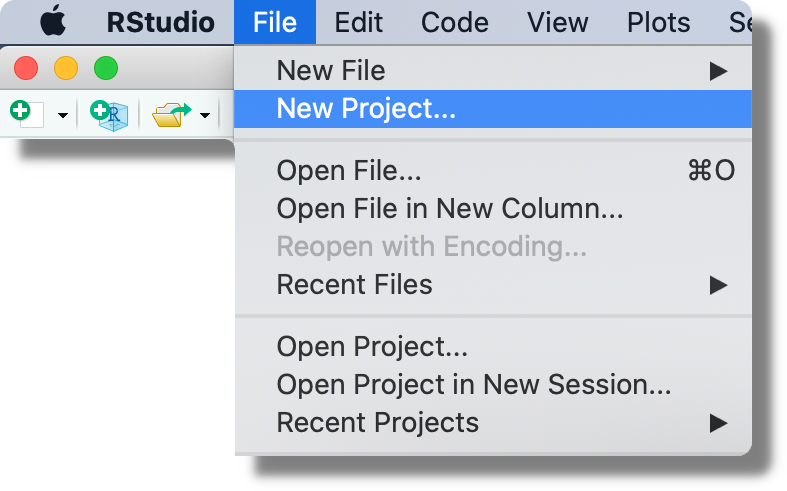
When creating a new project, we can decide between starting from a new directory (“New Directory”; the most common approach), associating a project with an already existing directory (“Existing Directory”), or associating a project to an online repository (“Version Control”; for more information see Chapter [TODO: add ref]).
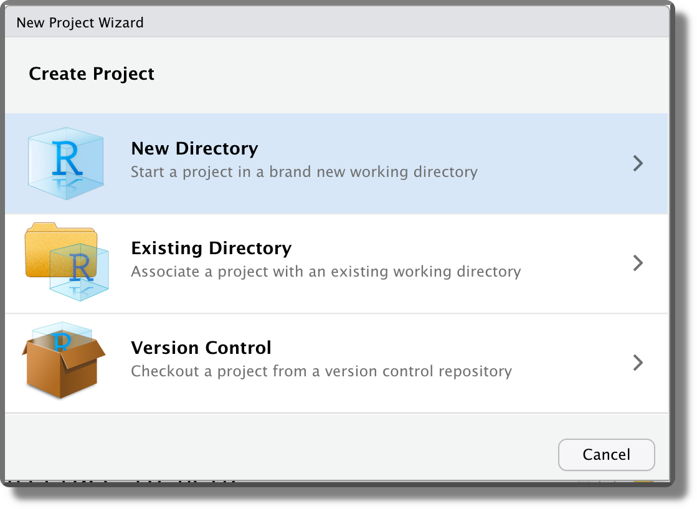
Selecting “New Directory”, then we can specify the desired project template. Different templates are available also depending on the installed packages. The default option is “New Project”.
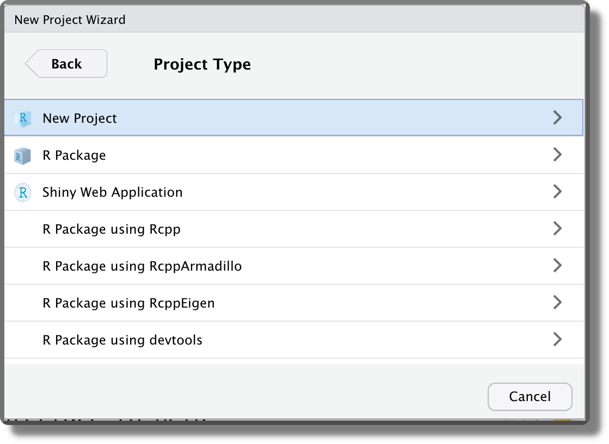
Finally, we can indicate the location where to create the project directory and specify the sdirectory name. This will be used also as the project name. Note that two more options are available “Create a git repository” and “Use renv with this project”. We discuss these options in Chapter [TODO: add ref]) and Chapter [TODO: add ref], respectively.
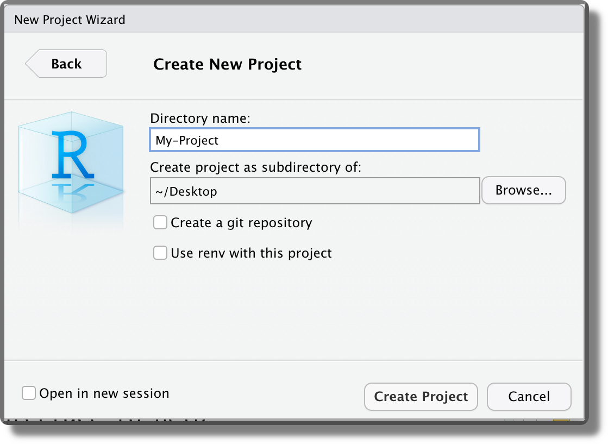
Selecting “Crete Project”, the project directory is created in the specified location and a new RStudio session is opened. Note that the Rstudio icon now displays the project name currently open 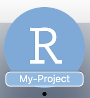. The current project is also indicated in the top right corner. Click on it to see other project options and to close the project (“Close Project”; or from the top bar menu “File > Close Project”).
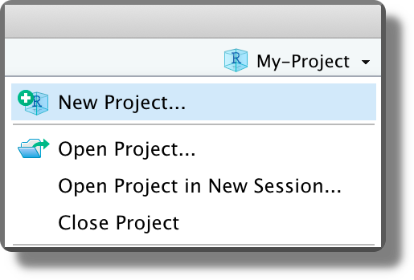
3.2.2 Project Features
We now discuss the main features of RStudio Projects:
Working Directory and File Paths. When opening a project, RStudio automatically sets the working directory at the project root. We can check the current working directory by looking at the top of the console panel or using the R command
getwd().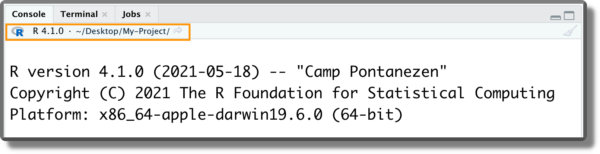 As discussed in Section 3.1.3.1, this is a very useful feature because now we no longer have to bother about setting the working directory manually (we can finally forget about the
setwd()command). Moreover, we can refer to any file using relative paths considering as reference the project root.
In R, we can specify file path using forward slash "/" or backslash "\" independently of the operative system we are currently using. However, the backslash has a special meaning in R as it is used as escape character. Thus, to specify a file path using backslash we have to double them (e.g., “my-project\\data\\my-data.csv”). All this leads to a simple solution:
Always use forward slash
"/"to specify file paths to avoid any troubles (e.g., “my-project/data/my-data.csv”).
<project-name>.RprojFile. The default Project template creates an empty directory with a single file named<project-name>.Rproj(plus some hidden files). Clicking on the<project-name>.Rprojfile from the file manager (not from RStudio), we can open the selected project in a new RStudio session. Clicking on the<project-name>.Rprojfile from the file panel in RStudio, instead, we can change the project settings (see the next point). Moreover, from the file panel in RStudio, if we click the Project icon on the top right corner (orange arrow in the image below), we are automatically redirected to the project root.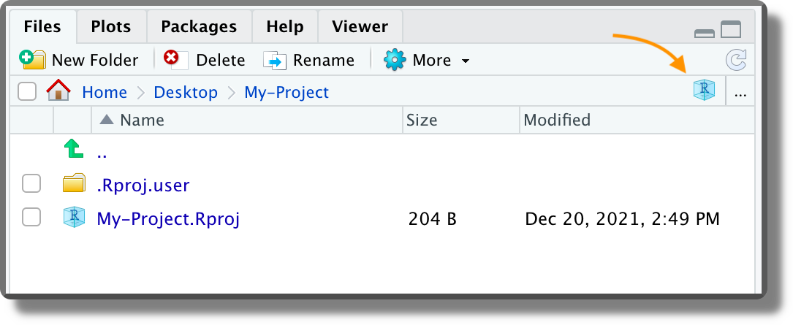 The
<project-name>.Rprojfile is simply a text file with the project settings. Using a text editor, we can see the actual content.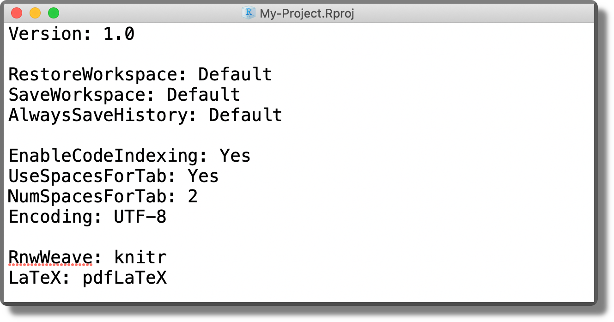
Project Settings. We can specify specific settings for each project. From the top bar menu, select “Tools > Project Options” and specify the required options according to our needs.
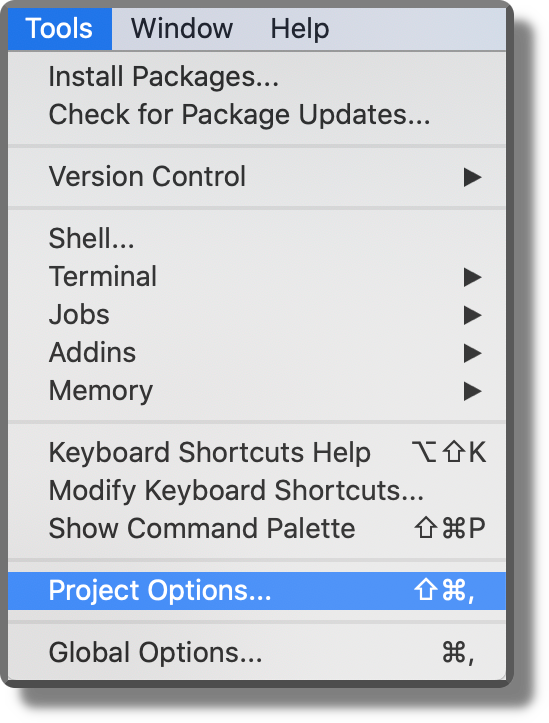 Some recommended settings should be applied as default to all projects. To do that, select from the top bar menu “Tools > Global Options”. From the panel “General” in the “Workspace” section, ensure the box “Restore…” is not selected and the option “Save…” is set to Never (see figure below). This ensures that the workspace is not saved between sessions and every time we start from a new empty environment. The reason for doing this is that it forces us to write everything needed for our project in scripts and then we use scripts to create the required objects. It is a short-term pain for a long-term winning, as it enhances reproducibility and avoids bugs due to overwritten objects in the environment. Moreover, we can finally say goodbye to the horrible
rm(list=ls())line of code found at the top of many scripts.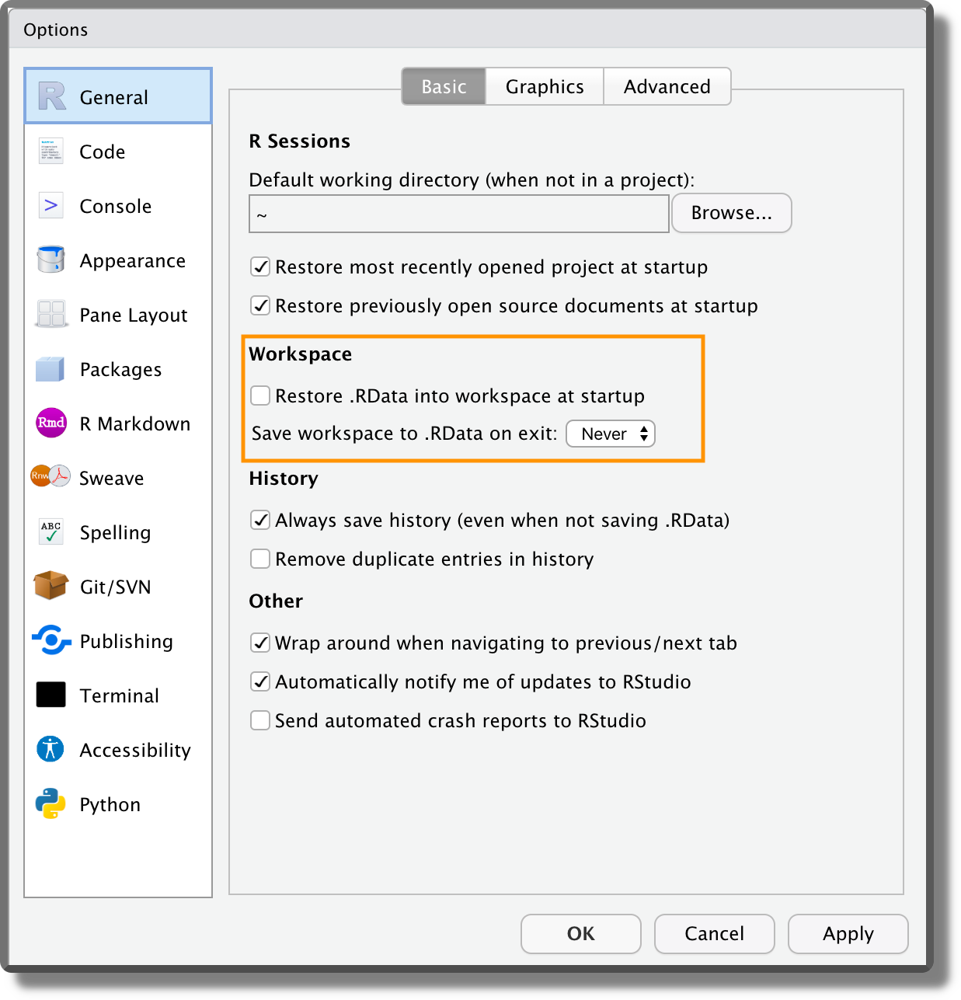 Another important setting is the encoding. From the panel “Code” ensure that the default text encoding is set to “UTF-8”. Encoding defines how the characters are represented by the computer. This could be problematic for different alphabets or special characters (e.g., accented characters). The UTF-8 encoding is becoming the modern standard as it covers all the possibilities.
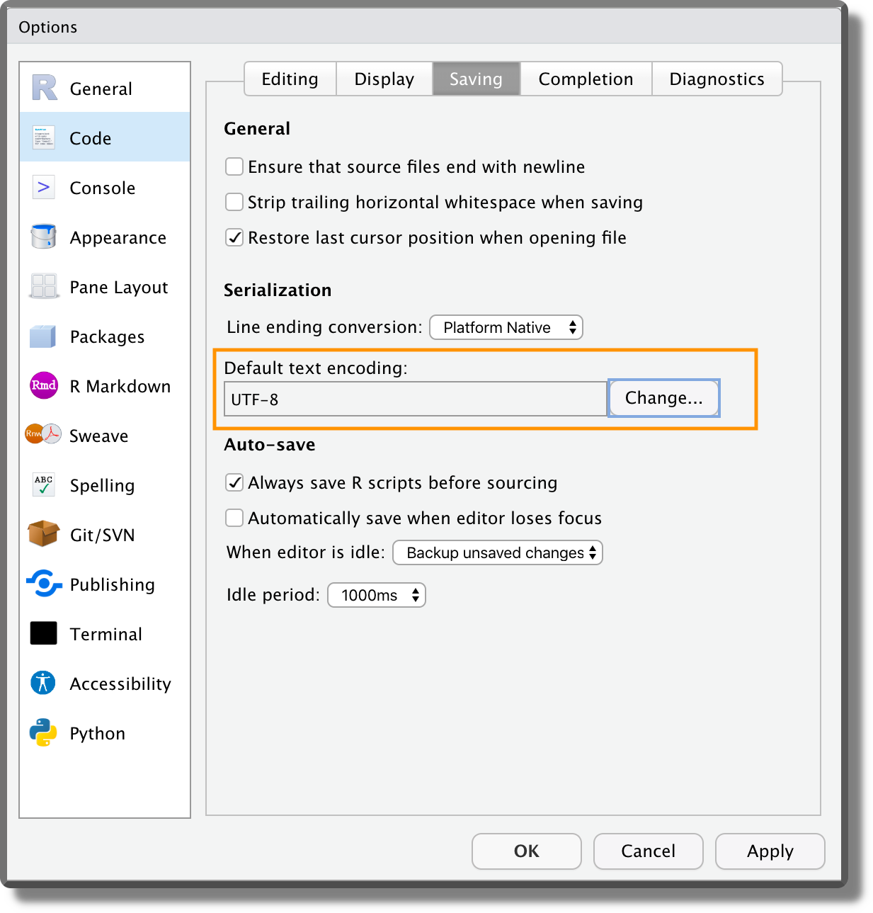
.RprofileFile. This file is a special script that is automatically executed at the beginning of each session (or when the session is restarted). This file is not available by default but we can create it by naming an R script as.Rprofile(without extension!) [TODO: check in windows https://stackoverflow.com/questions/28664852/saving-a-file-as-rprofile-in-windows]. Note that names that begin with a dot"."are reserved for the system and are hidden from the file manager. To see the hidden files, select from the files panel in RStudio the option “Show Hidden Files”.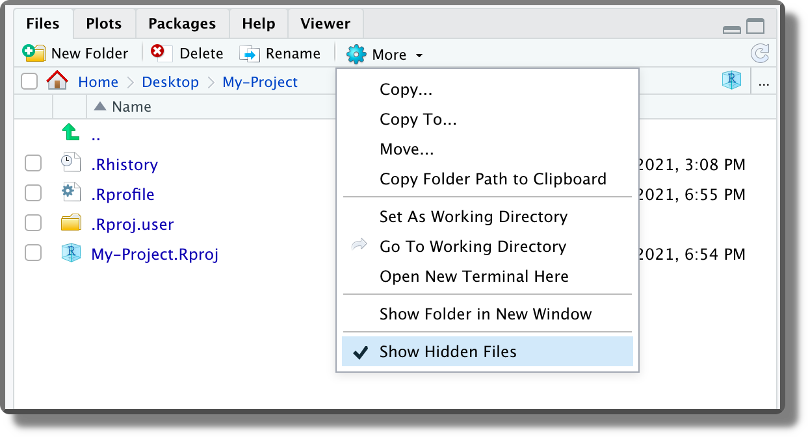 This file can be used to automate the execution of recurrent operations such as loading the required packages, setting R global options, or other package settings (e.g., ggplot themes). In the example below, we simply set a welcome message.
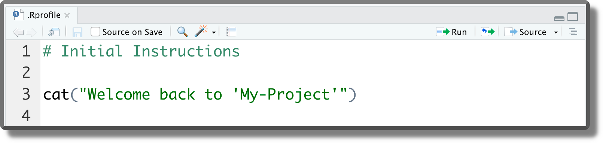 These commands are executed at the beginning of each session or when the session is restarted (
Ctrl+Shift+F10on Windows and Linux;Cmd/Ctrl+Shift+0on macOS).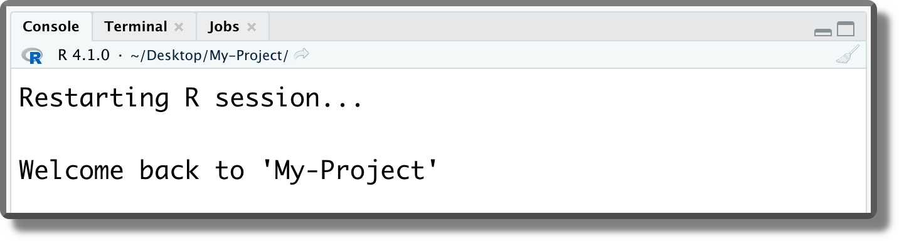
Like Multiple Office Desks. Another advantage of RStudio projects is that we can quickly move from one project to another. When opening a former project, all panels, tabs, and scripts are restored in the same configuration as we left them. This allows us to go straight back into our workflow without wasting any time.
We can think of it as having a dedicated office desk for each of our projects. On the table, we can leave everything that is required to work on that project and we simply move between different office desks according to the current project we are working on.
To know more about RStudio projects, see https://r4ds.had.co.nz/workflow-projects.html.
3.2.3 Advanced features
We briefly point out some other advanced features of RStudio projects. These are covered in more detail in the following Chapters.
R Package Template. As presented in Section 3.2.1, when creating a new project we can choose different templates. These templates automatically structure the project according to specific needs (e.g., creating a Shiny App or a Bookdown). In particular, one very interesting template is the R Package Template.
The R Package Template is used to create\(\ldots\) guess what? R packages. This template introduces some advanced features of R that become very handy when following a functional style approach. For example, we can manage our project package dependencies, easily load all our functions, document them, and create unit tests. We could go all the way and create a proper R package out of our project that other users can install. This requires some extra work and it may not be worth the effort, but of course, this will depend on the specific project aims.
Anyway, the R package template is very useful when writing our functions. For this reason, we discuss further details about the R package template in Chapter [TODO: add ref] when discussing the functional style approach.
Git. We can use version control systems such as Git to track changes on our RStudio projects. We can decide to create a git repository when creating our new project (see Section 3.2.1) or to associate the project to an existing repository. This is really a huge step forward in the quality of our workflow and it is absolutely worth the initial pain. All the required information to get familiar with Git and how to integrate the git workflow within RStudio projects is presented in Chapter [TODO: add ref].
renv. To allow reproducibility of the result, everyone must use the same project dependencies. This includes not only the specific software and relative packages but also their specific version number. The R packages ecosystem changes quite rapidly, new packages are released every month and already available packages are updated from time to time. This means that in a year or two, our code may fail due to some changes in the underlying dependencies. To avoid these issues, it is important to ensure that the same package versions are always used.We could list the required packages in a file and their versions manually or find a way to automate this process. As always, in R there is a package for almost everything and in this case, the answer is
renv.renvallows us to manage all the R packages dependencies of our projects in a very smooth workflow. We can includerenvin our project when creating a new project (see Section 3.2.1) or add it later. In Chapter [TODO: add ref], we introduce all the details about integrating therenvworkflow in our projects.
Bibtex
- Standard bibtex syntax for bibliography files
https://www.overleaf.com/learn/latex/Bibliography_management_with_biblatex#The_bibliography_file
Markdown Syntax
- Markdown Guide
https://www.markdownguide.org/
License
- Projects with no license
https://opensource.stackexchange.com/q/1720 - Differences between GNU and MIT Licenses
https://www.quora.com/What-are-the-key-differences-between-the-GNU-General-Public-license-and-the-MIT-License - Creative Commons license
https://creativecommons.org/about/cclicenses/ - Open Science Framework documentation
https://help.osf.io/hc/en-us/articles/360019739014-Licensing - GitHub documentation
https://docs.github.com/en/repositories/managing-your-repositorys-settings-and-features/customizing-your-repository/licensing-a-repository - GitHub license chooser
https://choosealicense.com/ - Creative Commons website
https://creativecommons.org/ - GitHub Setting a License guide
https://docs.github.com/en/communities/setting-up-your-project-for-healthy-contributions/adding-a-license-to-a-repository
Paths
- Paths in Python
https://medium.com/@ageitgey/python-3-quick-tip-the-easy-way-to-deal-with-file-paths-on-windows-mac-and-linux-11a072b58d5f
RStudio Projects
- RStudio projects general introduction
https://r4ds.had.co.nz/workflow-projects.html